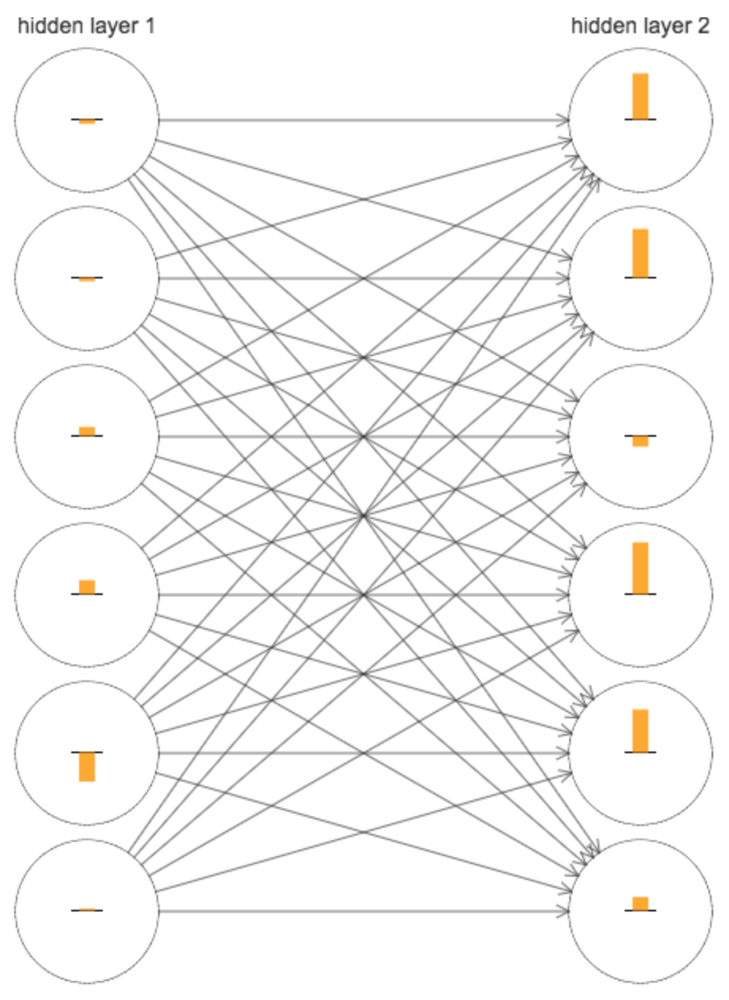
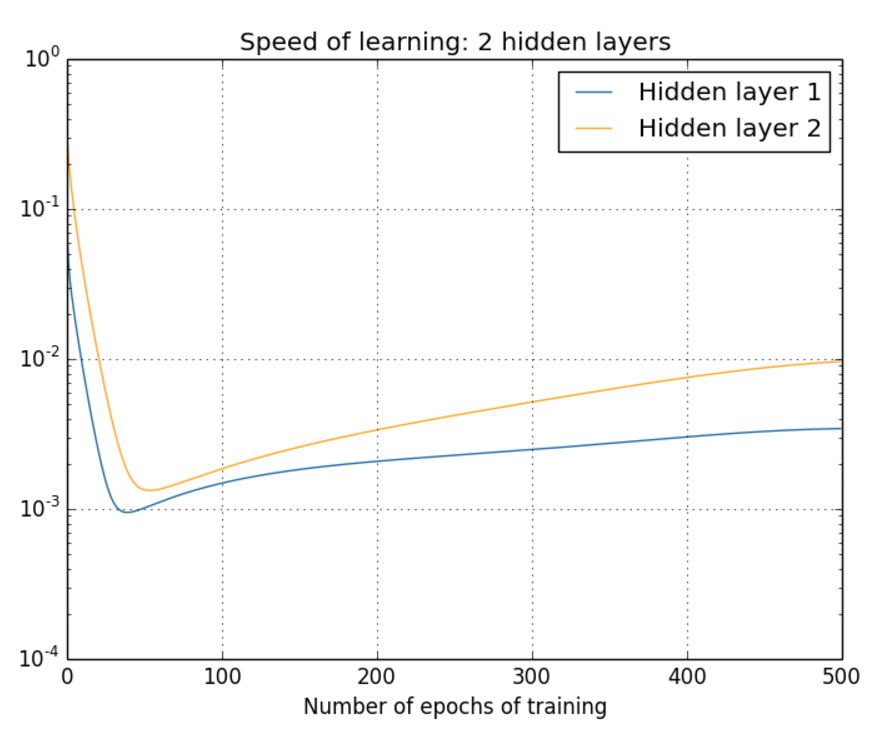
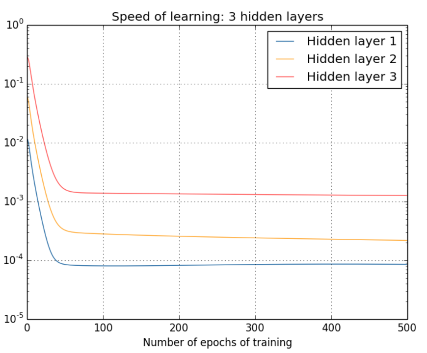
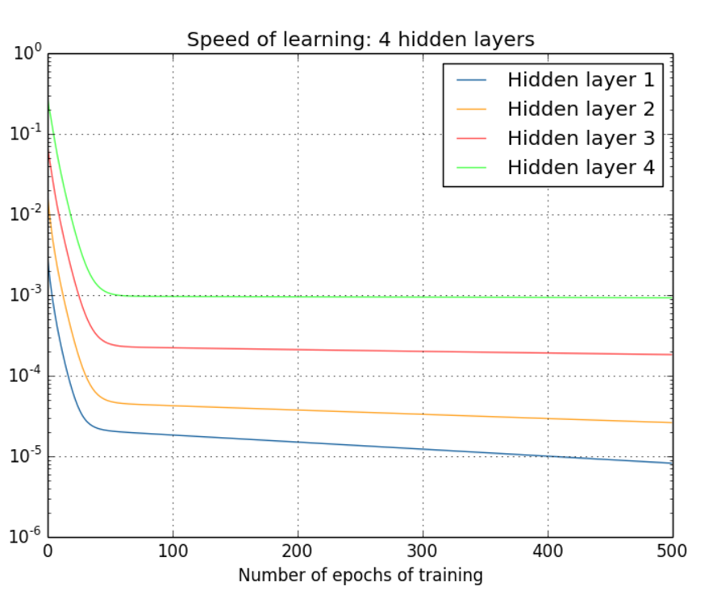
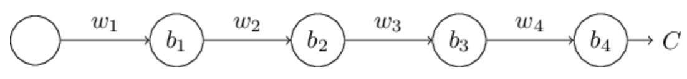
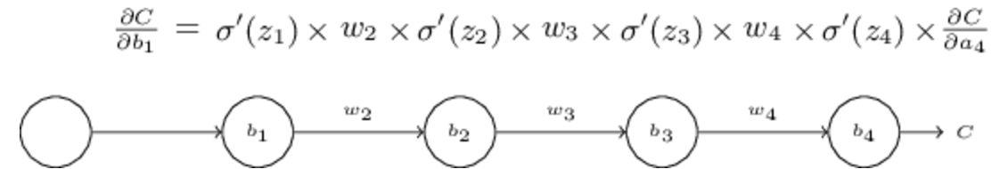
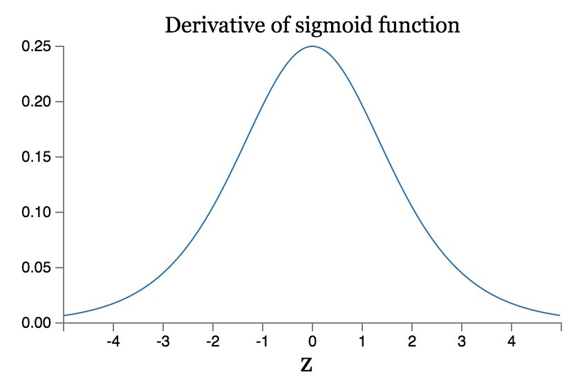
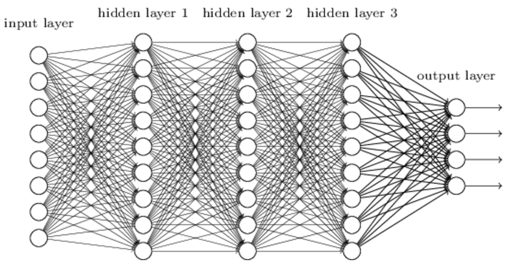

之前的章节，我们利用一个仅包含一层隐藏层的简单神经网络就在MNIST识别问题上获得了98%左右的准确率。我们于是本能会想到用更多的隐藏层，构建更复杂的神经网络将会为我们带来更好的结果。
就如同在进行图像模式识别的时候，第一层的神经层可以学到边缘特征，第二层的可以学到更复杂的图形特征，例如三角形，长方形等，第三层又会识别更加复杂的图案。这样看来，多层的结构就会带来更强大的模型，进行更复杂的识别。
那么在这一章，就试着训练这样的神经网络来看看对结果有没有什么提升。不过我们发现，训练的过程将会出现问题，我们的神经网络的效果并没有什么提升。
为什么会出现这样的情况呢，这一章就是主要围绕着这个问题展开的。我们将会发现，不同层的学习速率是不一样的。例如，在后面的网络层训练正在顺利学习的时候，前面网络层的学习却卡住几乎不动了。而且我们会发现这并不是偶然的，而是在理论上由梯度下降算法导致的。随着我们对问题的深入了解，我们会发现相反的情况也是可能发生的，就是前面网络层学习正常，而后面网络层学习停止。
这虽然看上去都是坏消息，不过深入探索这些问题也是帮助我们设计更好的更高效的深度神经网络的训练方法。
一. 梯度消失问题
先回到之前的程序上，当我们选择一个隐藏层的时候得到准确率为96.48%。接着增加一个隐藏层得到96.90%的结果。看上去结果不错，毕竟提升了。接着再加上一个隐藏层，却只得到了96.57%的结果。这个结果虽说下降了没多少，但是我们模型变复杂了，我们期望得到一个更好的结果，但是却事与愿违了。
这个结果看上去是奇怪的，而外的隐藏层理应使得模型可以处理更复杂的分类函数，不说结果提升多少，但是至少不能下降吧。为了搞清楚这期间到底是出了什么问题，我们回到两个隐藏层的情况，下面的图中，神经元上的柱形的长度表现的是其参数的更新速率，是当参数初始化完成后得到的结果：

大致看上去，第二层整体的更新速率要比第一层的快很多。但是由于权重的初始化也是随机的，我们很难判断这是不是一种巧合。
为了验证这是巧合还是事实，我们先定义\(\delta ^l_j = \frac{\partial C}{\partial b^l_j}\)，然后\(\delta ^l\)可以看作是一个向量，其中每个分量表示第\(l\)层中该神经元上参数更新的速率。于是就可以将\(||\delta^l||\)看作是\(l\)层整体的学习速率，利用该速率的大小就可以比较不同层学习速率间的差别。
根据这些定义，我们发现\(||\delta ^1 = 0.07||\)和\(||\delta ^2 = 0.31||\)，这的确印证了一开始观察到的结果，第二层整体比第一层快。
三层隐藏层的时候呢？结果为0.012, 0.060和0.283，也是一样的结果：后面的层比前面的层快。四层的时候为0.003，0.017，0.070和0.285，也是一样。
我们已经验证了参数刚初始完时的情形，也就是训练刚刚开始的情形，那么随着训练的进行，它们之间速率会发生什么变化呢？ 先看两层的情形：

可以看到两者的速率差别，第一层的速率一直比第二层要慢得多。接着看一下三层和四层的情况：


也是一样的结果，速率都是前面的层要慢于后面的层。
我们于是可以得到一个重要的观察现象：在某些神经网络中，通过隐藏层从后向前看，梯度会变的越来越小。这也意味着，前面层的学习会显著慢于后面层的学习。这就是梯度消失问题。
那么是什么导致了梯度消失呢？是否可以避免这样的问题呢？事实上，的确存在替代方案，但是会导致另外一个问题：前面层的梯度会变的很大而不是消失。这就是梯度爆炸问题。也就是说深度神经网络上的梯度要么倾向于爆炸要么倾向于消失，这都是不稳定的。而这个不稳定性也是基于梯度的学习算法都要面临的一个基本问题。
不过我们也许会有疑问，为什么梯度消失就是问题，梯度是不是说明学习已经够了，这个神经元的参数已经被正确学习到了呢？
事实当然不是这样的，我们一开始初始化产生的参数肯定不可能那么巧合是最优的参数。然而从三层隐藏层的那个例子看到，随机初始化意味着第一层会错过很多的重要信息，即使后面的层训练的再好，也很难识别输入图像。并不是第一层已经训练好了，而是它们无法得到足够的训练。如果我们想要训练这样的神经网络，就必须解决梯度消失问题。
二. 是什么导致了梯度消失问题？
看一个简单的例子，一个每层只有一个神经元的神经网络：

不过注意到这里的\(C\)其实表示的是损失函数，其输出分别为：\(a_1,a_2,a_3,a_4\)。
根据求导的链式法则有：

为什么会发生梯度消失：
其实看到这样一个式子：
如果还记得前面章节神经元saturated发生的原因的话也能知道这里究竟是什么导致了梯度消失。
注意到其间有一系列的\(w_j \sigma '(z_j)\)项，先看一下sigmoid函数的导数图像：

最大值也才0.25，然后由于参数的初始化使用\(G(0, 1)\)的高斯分布，常常会导致\(|w_j| < 1\)，这样就会导致\(w_j \sigma '(z_j)<\frac{1}{4}\)。然后一系列这些小值的积也会变得更小。
当然这并不是一个严格的数学证明，我们很容易就会举出很多反例。比如在训练过程中权重\(w_j\)是可能变大的，如果大到使得\(|w_j\sigma '(z_j)<\frac{1}{4}|\)不再满足，或者说大于1，梯度就不会消失了，它将指数增长，从而导致另外一个问题：梯度爆炸问题。
梯度爆炸问题：
再来看一个梯度爆炸发生的例子。我们选择大的权重：\(w_1=w_2=w_3=w_4=100\)。然后选择偏差使得\(\sigma '(z_j)\)不太小。 这个并不难做到，例如我们可以选择使得\(z_j=0\)时的bias，于是得到\(w_j \sigma '(z_j) = 100*0.25 = 25\)，这样就会导致梯度爆炸了。
梯度的不稳定性问题：
经过这些讨论我们就会发现，梯度消失也好，梯度爆炸也好，归根结底是由于层数的增加，多个项相乘，势必就会导致不稳定的情况。除非这些积能恰到好处的相等，才可以让不同层之间的学习速率相近。不过实际上，这几乎是不可能发生的。总之，只要我们使用基于梯度的学习算法，不同层的学习速率势必是有很大差距的。
练习：
问题：
之前我们基于\(\sigma '(z) <\frac{1}{4}\)的事实讨论了梯度消失的问题，那么是否可以使用另外一个激活函数，使得其导数足够大，来帮助我们解决梯度不稳定的问题呢？
答案：
这个当然是不可以的，不管一开始的值是怎么样的，因为多个项相乘，这就会导致积是指数增长或者指数下降，可能浅层时不明显，但是随着层数的增加，都会导致这个问题出现。
梯度消失问题很难消除的原因：
之前已经发现了在深层网络的前几层会出现梯度或者消失或者爆炸的问题。事实上，当使用sigmoid函数作为激活函数的时候，梯度消失几乎是总会出现的。考虑到避免梯度消失，要满足条件\(|w\sigma '(z)| \geqslant 1\)。我们也许会觉得这还不简单，只要\(w\)大不就可以了，但是注意到\(w\)大，也会导致\(z=wx+b\)也大，然后\(\sigma '(z)\)就会很小。唯一的方法就是还需要保证\(x\)只出现在一个很小的范围内，这在实际情况下显然是很难发生的。所以说就总是会导致梯度消失的问题。
拓展：
拓展一：
考虑\(|w\sigma '(wa+b)|\)，假设\(|w\sigma '(wa+b)| \geqslant 1\)
(1) 证明这只可能在\(|w|\geqslant 4\)时成立
之前已经知道\(|\sigma '(z)|\)在0处取最大值0.25，所以\(|w\sigma '(wa+b)| \geqslant 1\)成立的话势必需要\(|w| \geqslant 1/0.25 = 5\) 。
(2)假设\(|w|\geqslant 4\)，考虑到\(|w\sigma '(wa+b)| \geqslant 1\)，证明此时的\(a\)的变化区间被限制在宽度
内
这个就是纯数学问题解方程了，利用一元二次方程的求根公式可以求得\(e^{-z}_{max}\)和\(e^{-z}_{min}\)，然后求对数后相减，稍微变换一下形式就可以得到这个结果。
(3)证明上面的范围的最大值大约为0.45，在\(|w| \approx 6.9\)处得到。于是可以看到即使所有这些条件都满足，激活函数的符合要求的输入范围还是非常窄，还是很难避免梯度消失的问题。
求导算导数为0的点求得。
拓展二：identity神经元
考虑一个单输入\(x\)的神经元，中间层参数为\(w_1\)和\(b\)，然后输出层参数为\(w_2\)，证明通过选择适当的权重和偏差，可以使得\(w_2 \sigma (w_1 x + b) \approx x\)对任意\(x\in [0, 1]\)成立。这个神经元可以被认为是一种identity神经元，其输出和输入一样（只差一个权重因子的放缩）。提示：可以将\(x\)写为\(x=\frac{1}{2} + \Delta\), 假设\(w_1\)很小，使用\(w_1 \Delta\)处的泰勒展开。
之前讨论sigmoid函数形状的时候知道，当\(|w_1|\)增大的时候，函数会变得越来越窄，逼近解约函数。当\(|w_1|\)非常小的时候，函数越来越宽，在某个区间内会逼近线性函数，但是既然是sigmoid函数，当\(x \rightarrow \infty\)时，函数都是会趋向于1或0的。
这里的证明我没有用泰勒展开，我想的是既然要证明该函数在某个区间的线性，只要证明它导数在该区间趋近于常数即可。
求\(\sigma (w_1 x+b)\)的导数为\(\sigma '(w_1 x +b) = \frac{w_1 e^{-(w_1 x + b)}}{(1+e^{-(w_1 x + b)})^2} = \frac{w_1 e^{w_1 x + b}}{(1+e^{w_1 x + b})^2}\)。
不妨令\(x = \frac{1}{2} + \Delta\)则上式变为：
\(\frac{w_1 e^{w_1 \Delta}}{1+2e^{w_1 \Delta} + e^{2w_1 \Delta}}\)，由于\(\Delta = x - \frac{1}{2} \in [-\frac{1}{2}, \frac{1}{2}]\), 而\(w_1\)是很小的数，于是可将上式展开为\(\frac{w_1 (1+ w_1 \Delta)}{1 + 2(1+w_1 \Delta) + 1 + 2w_1 \Delta} = \frac{w_1 (1+ w_1 \Delta)}{4(1+ w_1 \Delta)} = \frac{w_1}{4}\)为常数，通过适当调整\(w_2\)就可以使其输出恰好为\(x\)。
三. 复杂神经网络中的梯度不稳定问题
前面是在一个简单的例子下讨论的梯度不稳定问题，对于如下这个复杂的情况：

根据之前反向传播的知识，我们可以得到：
其中\(\sum '(z^l)\)为一个对角矩阵，其中每个成员为\(\sigma '(z)\)为第l层的各个加权输入。\(w^l\)是不同层的权重矩阵，\(\bigtriangledown_a C\)为损失函数C对输出层的输出的偏导数。
这个式子看上去比之前复杂的多，但是其实还是能看到其中很多个\((w^j)^T\sum '(z^j)\)进行连乘，还是会出现梯度不稳定的问题。